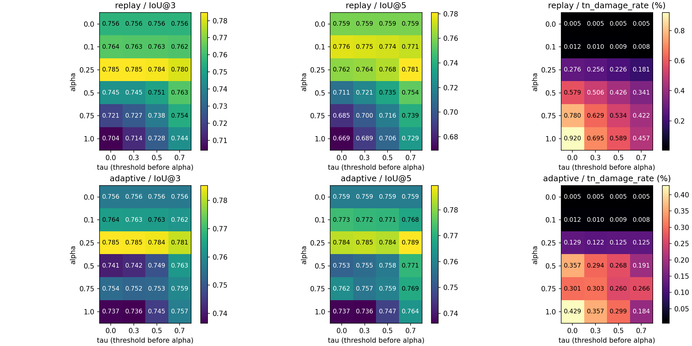
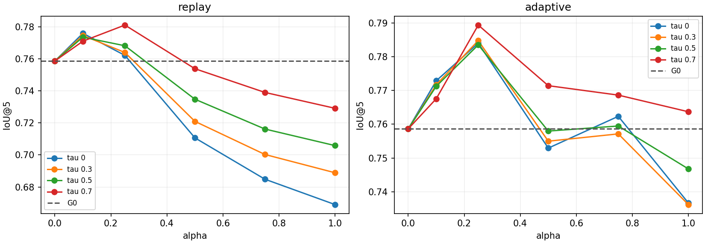
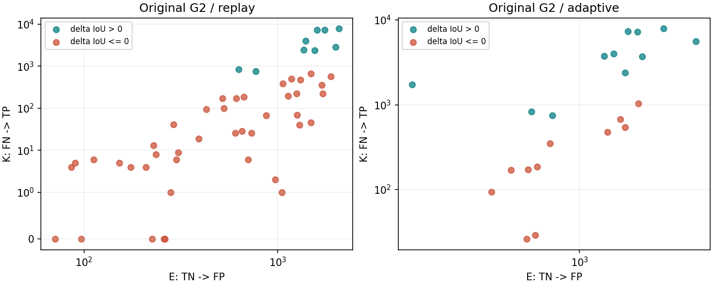

replay：最佳网格点α=0.25、τ=0.7，IoU@5=0.781075；相对G0 +0.022431，相对原G2 +0.112062。
replay 最佳校准相对G0：16实例改善9、退化5、持平2；TP破坏 1.053%→0.959%，TN误加 0.005%→0.181%。
replay 原G2的51次正点击：Gate单独K=40,513、E=41,892，池化K/E=0.9671；ΔIoU均值=-0.027105；改善9次、退化42次。
adaptive：最佳网格点α=0.25、τ=0.7，IoU@5=0.789377；相对G0 +0.030734，相对原G2 +0.052662。
adaptive 最佳校准相对G0：16实例改善11、退化3、持平2；TP破坏 1.053%→1.426%，TN误加 0.005%→0.125%。
adaptive 原G2的22次正点击：Gate单独K=49,075、E=26,625，池化K/E=1.8432；ΔIoU均值=-0.000623；改善11次、退化11次。
ΣK/ΣE是像素事件池化比值，平均ΔIoU则对正点击逐次等权平均，二者不能相互替代。K/E>基础IoU的改善判据应逐次使用本轮K、E和基础IoU，不能拿全体池化K/E与平均IoU比较。原G2在小目标上的少量误加可产生较大IoU损失，案例图给出实测反例。
| 协议 | 方案 | α | τ | IoU@1 | IoU@3 | IoU@5 | FN修复 | FP删除 | TP破坏 | TN误加 |
|---|---|---|---|---|---|---|---|---|---|---|
| replay | G0 | 0.00 | 0.0 | 0.6857 | 0.7563 | 0.7586 | 1.993% | 89.563% | 1.053% | 0.005% |
| replay | 原G2 | 1.00 | 0.0 | 0.6857 | 0.7042 | 0.6690 | 61.008% | 88.648% | 0.918% | 0.920% |
| replay | 最佳校准 | 0.25 | 0.7 | 0.6857 | 0.7802 | 0.7811 | 31.685% | 89.490% | 0.959% | 0.181% |
| adaptive | G0 | 0.00 | 0.0 | 0.6857 | 0.7563 | 0.7586 | 1.993% | 89.563% | 1.053% | 0.005% |
| adaptive | 原G2 | 1.00 | 0.0 | 0.6857 | 0.7370 | 0.7367 | 59.096% | 89.247% | 1.150% | 0.429% |
| adaptive | 最佳校准 | 0.25 | 0.7 | 0.6857 | 0.7810 | 0.7894 | 28.860% | 89.826% | 1.426% | 0.125% |
| α | τ | IoU@1 | IoU@3 | IoU@5 | FN修复 | FP删除 | TP破坏 | TN误加 | ΔIoU@5 vs G0 |
|---|---|---|---|---|---|---|---|---|---|
| 0.00 | 0.0 | 0.6857 | 0.7563 | 0.7586 | 1.993% | 89.563% | 1.053% | 0.005% | +0.00000 |
| 0.00 | 0.3 | 0.6857 | 0.7563 | 0.7586 | 1.993% | 89.563% | 1.053% | 0.005% | +0.00000 |
| 0.00 | 0.5 | 0.6857 | 0.7563 | 0.7586 | 1.993% | 89.563% | 1.053% | 0.005% | +0.00000 |
| 0.00 | 0.7 | 0.6857 | 0.7563 | 0.7586 | 1.993% | 89.563% | 1.053% | 0.005% | +0.00000 |
| 0.10 | 0.0 | 0.6857 | 0.7639 | 0.7759 | 9.314% | 89.493% | 1.006% | 0.012% | +0.01729 |
| 0.10 | 0.3 | 0.6857 | 0.7632 | 0.7746 | 9.034% | 89.529% | 1.014% | 0.010% | +0.01593 |
| 0.10 | 0.5 | 0.6857 | 0.7632 | 0.7735 | 8.696% | 89.536% | 1.016% | 0.009% | +0.01488 |
| 0.10 | 0.7 | 0.6857 | 0.7622 | 0.7710 | 7.834% | 89.541% | 1.018% | 0.008% | +0.01236 |
| 0.25 | 0.0 | 0.6857 | 0.7848 | 0.7621 | 42.318% | 89.414% | 0.936% | 0.276% | +0.00350 |
| 0.25 | 0.3 | 0.6857 | 0.7846 | 0.7640 | 40.458% | 89.466% | 0.949% | 0.256% | +0.00531 |
| 0.25 | 0.5 | 0.6857 | 0.7837 | 0.7682 | 37.896% | 89.484% | 0.957% | 0.226% | +0.00952 |
| 0.25 | 0.7 | 0.6857 | 0.7802 | 0.7811 | 31.685% | 89.490% | 0.959% | 0.181% | +0.02243 |
| 0.50 | 0.0 | 0.6857 | 0.7454 | 0.7106 | 54.453% | 89.042% | 0.783% | 0.579% | -0.04800 |
| 0.50 | 0.3 | 0.6857 | 0.7454 | 0.7209 | 51.663% | 89.134% | 0.808% | 0.506% | -0.03770 |
| 0.50 | 0.5 | 0.6857 | 0.7506 | 0.7348 | 48.591% | 89.166% | 0.824% | 0.426% | -0.02387 |
| 0.50 | 0.7 | 0.6857 | 0.7633 | 0.7538 | 40.611% | 89.194% | 0.825% | 0.341% | -0.00483 |
| 0.75 | 0.0 | 0.6857 | 0.7209 | 0.6848 | 58.138% | 88.777% | 0.823% | 0.780% | -0.07382 |
| 0.75 | 0.3 | 0.6857 | 0.7269 | 0.7003 | 53.951% | 88.917% | 0.873% | 0.629% | -0.05838 |
| 0.75 | 0.5 | 0.6857 | 0.7377 | 0.7162 | 51.451% | 88.985% | 0.901% | 0.534% | -0.04249 |
| 0.75 | 0.7 | 0.6857 | 0.7542 | 0.7390 | 46.217% | 89.066% | 0.909% | 0.422% | -0.01963 |
| 1.00 | 0.0 | 0.6857 | 0.7042 | 0.6690 | 61.008% | 88.648% | 0.918% | 0.920% | -0.08963 |
| 1.00 | 0.3 | 0.6857 | 0.7140 | 0.6889 | 54.915% | 88.858% | 1.000% | 0.695% | -0.06977 |
| 1.00 | 0.5 | 0.6857 | 0.7281 | 0.7058 | 52.581% | 88.950% | 1.010% | 0.589% | -0.05281 |
| 1.00 | 0.7 | 0.6857 | 0.7444 | 0.7291 | 47.952% | 89.031% | 1.023% | 0.457% | -0.02953 |
| α | τ | IoU@1 | IoU@3 | IoU@5 | FN修复 | FP删除 | TP破坏 | TN误加 | ΔIoU@5 vs G0 |
|---|---|---|---|---|---|---|---|---|---|
| 0.00 | 0.0 | 0.6857 | 0.7563 | 0.7586 | 1.993% | 89.563% | 1.053% | 0.005% | +0.00000 |
| 0.00 | 0.3 | 0.6857 | 0.7563 | 0.7586 | 1.993% | 89.563% | 1.053% | 0.005% | +0.00000 |
| 0.00 | 0.5 | 0.6857 | 0.7563 | 0.7586 | 1.993% | 89.563% | 1.053% | 0.005% | +0.00000 |
| 0.00 | 0.7 | 0.6857 | 0.7563 | 0.7586 | 1.993% | 89.563% | 1.053% | 0.005% | +0.00000 |
| 0.10 | 0.0 | 0.6857 | 0.7640 | 0.7729 | 9.190% | 89.796% | 1.493% | 0.012% | +0.01424 |
| 0.10 | 0.3 | 0.6857 | 0.7633 | 0.7717 | 8.920% | 89.831% | 1.502% | 0.010% | +0.01307 |
| 0.10 | 0.5 | 0.6857 | 0.7634 | 0.7713 | 8.582% | 89.838% | 1.504% | 0.009% | +0.01261 |
| 0.10 | 0.7 | 0.6857 | 0.7620 | 0.7676 | 7.807% | 89.825% | 1.505% | 0.008% | +0.00892 |
| 0.25 | 0.0 | 0.6857 | 0.7853 | 0.7840 | 34.239% | 90.148% | 1.604% | 0.129% | +0.02538 |
| 0.25 | 0.3 | 0.6857 | 0.7850 | 0.7848 | 32.009% | 90.198% | 1.616% | 0.122% | +0.02613 |
| 0.25 | 0.5 | 0.6857 | 0.7842 | 0.7835 | 29.780% | 90.217% | 1.634% | 0.125% | +0.02487 |
| 0.25 | 0.7 | 0.6857 | 0.7810 | 0.7894 | 28.860% | 89.826% | 1.426% | 0.125% | +0.03073 |
| 0.50 | 0.0 | 0.6857 | 0.7406 | 0.7529 | 57.656% | 89.999% | 0.978% | 0.357% | -0.00571 |
| 0.50 | 0.3 | 0.6857 | 0.7425 | 0.7550 | 52.300% | 90.214% | 1.067% | 0.294% | -0.00365 |
| 0.50 | 0.5 | 0.6857 | 0.7488 | 0.7580 | 44.246% | 90.250% | 1.101% | 0.268% | -0.00066 |
| 0.50 | 0.7 | 0.6857 | 0.7625 | 0.7714 | 35.915% | 90.232% | 1.025% | 0.191% | +0.01278 |
| 0.75 | 0.0 | 0.6857 | 0.7537 | 0.7623 | 56.775% | 89.313% | 1.162% | 0.301% | +0.00370 |
| 0.75 | 0.3 | 0.6857 | 0.7524 | 0.7572 | 53.283% | 89.106% | 1.110% | 0.303% | -0.00149 |
| 0.75 | 0.5 | 0.6857 | 0.7531 | 0.7595 | 49.110% | 89.129% | 1.058% | 0.260% | +0.00084 |
| 0.75 | 0.7 | 0.6857 | 0.7593 | 0.7686 | 45.449% | 89.264% | 0.981% | 0.266% | +0.00999 |
| 1.00 | 0.0 | 0.6857 | 0.7370 | 0.7367 | 59.096% | 89.247% | 1.150% | 0.429% | -0.02193 |
| 1.00 | 0.3 | 0.6857 | 0.7365 | 0.7362 | 53.472% | 89.345% | 1.377% | 0.357% | -0.02242 |
| 1.00 | 0.5 | 0.6857 | 0.7454 | 0.7468 | 49.466% | 89.121% | 1.209% | 0.299% | -0.01186 |
| 1.00 | 0.7 | 0.6857 | 0.7574 | 0.7637 | 42.855% | 89.481% | 1.316% | 0.184% | +0.00506 |
| 协议 | round | 正点击数 | K：FN→TP | E：TN→FP | ΣK/ΣE | 平均ΔIoU | 改善次数 | 退化次数 |
|---|---|---|---|---|---|---|---|---|
| replay | 2 | 12 | 23554 | 12719 | 1.852 | -0.0246 | 5 | 7 |
| replay | 3 | 12 | 10223 | 13225 | 0.773 | -0.0422 | 1 | 11 |
| replay | 4 | 14 | 4130 | 10008 | 0.413 | -0.0284 | 2 | 12 |
| replay | 5 | 13 | 2606 | 5940 | 0.439 | -0.0142 | 1 | 12 |
| adaptive | 2 | 12 | 23554 | 12719 | 1.852 | -0.0246 | 5 | 7 |
| adaptive | 3 | 1 | 7941 | 2246 | 3.536 | 0.1233 | 1 | 0 |
| adaptive | 4 | 6 | 11087 | 8428 | 1.315 | 0.0107 | 3 | 3 |
| adaptive | 5 | 3 | 6493 | 3232 | 2.009 | 0.0312 | 2 | 1 |
| 协议 | index | 正点击数 | K：FN→TP | E：TN→FP | ΣK/ΣE | 平均ΔIoU | 改善次数 | 退化次数 |
|---|---|---|---|---|---|---|---|---|
| replay | 0 | 4 | 1190 | 4002 | 0.297 | -0.0056 | 0 | 4 |
| replay | 1 | 4 | 744 | 4757 | 0.156 | -0.0271 | 0 | 4 |
| replay | 2 | 2 | 31 | 754 | 0.041 | -0.0420 | 0 | 2 |
| replay | 3 | 4 | 36 | 1117 | 0.032 | -0.1261 | 0 | 4 |
| replay | 4 | 4 | 7607 | 5329 | 1.427 | 0.0238 | 1 | 3 |
| replay | 5 | 0 | 0 | 0 | — | — | 0 | 0 |
| replay | 6 | 4 | 94 | 1010 | 0.093 | -0.1124 | 0 | 4 |
| replay | 7 | 4 | 4781 | 4562 | 1.048 | 0.0134 | 1 | 3 |
| replay | 8 | 4 | 1166 | 2459 | 0.474 | -0.0112 | 1 | 3 |
| replay | 9 | 4 | 2802 | 5418 | 0.517 | -0.0017 | 1 | 3 |
| replay | 10 | 4 | 180 | 1161 | 0.155 | -0.0636 | 0 | 4 |
| replay | 11 | 4 | 427 | 2231 | 0.191 | -0.0152 | 0 | 4 |
| replay | 12 | 4 | 20434 | 7163 | 2.853 | 0.0756 | 4 | 0 |
| replay | 13 | 0 | 0 | 0 | — | — | 0 | 0 |
| replay | 14 | 4 | 189 | 1300 | 0.145 | -0.0778 | 0 | 4 |
| replay | 15 | 1 | 832 | 629 | 1.323 | 0.0128 | 1 | 0 |
| adaptive | 0 | 1 | 477 | 1308 | 0.365 | -0.0068 | 0 | 1 |
| adaptive | 1 | 2 | 1212 | 3034 | 0.399 | -0.0251 | 0 | 2 |
| adaptive | 2 | 1 | 26 | 602 | 0.043 | -0.0680 | 0 | 1 |
| adaptive | 3 | 1 | 29 | 654 | 0.044 | -0.3860 | 0 | 1 |
| adaptive | 4 | 1 | 7320 | 1595 | 4.589 | 0.1790 | 1 | 0 |
| adaptive | 5 | 0 | 0 | 0 | — | — | 0 | 0 |
| adaptive | 6 | 1 | 94 | 428 | 0.220 | -0.2464 | 0 | 1 |
| adaptive | 7 | 2 | 7744 | 3216 | 2.408 | 0.1118 | 2 | 0 |
| adaptive | 8 | 2 | 1100 | 1523 | 0.722 | -0.0035 | 1 | 1 |
| adaptive | 9 | 2 | 3423 | 3315 | 1.033 | 0.0946 | 1 | 1 |
| adaptive | 10 | 1 | 170 | 518 | 0.328 | -0.0974 | 0 | 1 |
| adaptive | 11 | 2 | 1910 | 866 | 2.206 | 0.0226 | 1 | 1 |
| adaptive | 12 | 4 | 24566 | 8327 | 2.950 | 0.0898 | 4 | 0 |
| adaptive | 13 | 0 | 0 | 0 | — | — | 0 | 0 |
| adaptive | 14 | 1 | 172 | 610 | 0.282 | -0.1608 | 0 | 1 |
| adaptive | 15 | 1 | 832 | 629 | 1.323 | 0.0128 | 1 | 0 |



原始COCO案例图及逐轮概率数组保留在本地，不包含在此公开导出中。
{
"arrays": 3840,
"native_formula_exact": 3840,
"original_contribution_exact": 3840,
"native_contribution_exact": 3840,
"monotone_original_masks": 3840,
"max_delta_iou_identity_error": 0.0,
"calibration_uses_GT": false,
"fixed_replay_same_24x16x5": true,
"alpha0_bitexact_states": 640,
"original_G2_bitexact_states": 160,
"unit_tests": 7,
"model_and_weights_unchanged": true,
"baseline_files_unchanged": 213
}
完整对比CSV · 逐轮指标 · 每次正点击贡献 · 按轮贡献 · 按实例贡献 · 实例完整指标 · 最佳校准逐实例对比 · 实验协议 · 独立验证 · 单元测试